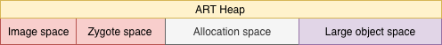
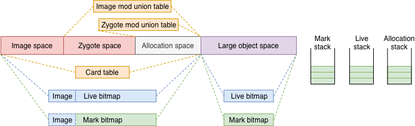
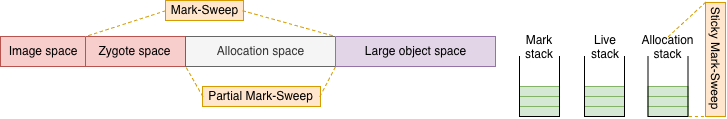

2013年，為了追上硬體效能演進的腳步，Google另外設計了ART來取代Dalvik，並在KitKat(4.4)版本進行實驗性的導入，讓使用者可以選擇性使用。直到2015年Lollipop(5.0)才正式導入系統。
為了相容，ART依然支援Dex檔，但不是執行Dex檔而是Oat檔。詳細在此篇不再重述，可以參照以下兩篇：
- 《About ART - Part 1 - Compilation》
- 《Year End Report - ART - From Dalvik to ART》
由於ART在KitKat後也歷經多次優化，因此接下來的內容將先以Kitkat版本為主，與Dalvik GC篇一樣，一切都要從Heap開始說起。
ART Heap
與Dalvik相同，從建立Heap的函示，可以依序知道有：

其他結構還有：
- Bitmap：Live bitmap、Mark bitmap。
- Table：Card table、Image mod union table、Zygote mod union table。
- Stack：Mark stack、Allocation stack、Live stack。
相較於Dalvik，ART多了兩個space：
- Image space：從ART導入AOT開始，Dex檔會在安裝時被系統預先編譯成Oat檔，並存放在
data/dalvik-cache。Oat檔會在啟動Application時用於產生Image space，同時將Oat檔內容mmap進記憶體。 - Large object space：繼承自DiscontinuousSpace，有自己的Live bitmap、Mark bitmap。由此可知前面其他space就屬於ContinuousSpace，不同的是這些space的bitmap是串連起來的。
其他與Heap結構有關的重點還有：
- Mod union table：兩個table繼承自不同的Mod union table類別，有著不同的處理範圍。Image mod union table屬於ModUnionTableToZygoteAllocspace，紀錄從Image space出發到Zygote space和Allocation space的引用；而Zygote mod union則是ModUnionTableCardCache，紀錄Zygote space到Allocation space的引用。
- GC scope：Image space在建立時，同時也會傳入一個參數kGcRetentionPolicyNeverCollect，依照定義，就是不會被GC，因此Image space不需要Mark bitmap；需要時，會以Live bitmap代替。Zygote space則是在fork時才會指定kGcRetentionPolicyFullCollect，就是只接受Full GC。剩下的Space就是每次GC都會處理的部分，kGcRetentionPolicyAlwaysCollect。
函示最後GC的建立：
for (size_t i = 0; i < 2; ++i) { |
迴圈設計表示有兩組GC，分成同步與不同步，都由MarkSweep、PartialMarkSweep、StickyMarkSweep組成。
綜合以上，所有結構的關係如下：

不同於Dalvik，產生GC的原因少了兩個，一樣在GcCause定義：
kGcCauseForAlloc：沒有足夠空間來存放物件時。
kGcCauseBackground：當使用空間達到一定佔比時自動啟動。
kGcCauseExplicit：透過
System.gc()主動啟動。
GC的啟用點並無變化，一樣是從CollectGarbageInternal()。
Multiple GC
ART將GC分成三種類型，可預期會有繼承架構，依序分別是：
GarbageCollector -> MarkSweep -> PartialMarkSweep -> StickyMarkSwee |
從邏輯上來看可知Partial GC回收的範圍比Sticky還大；代表繼承順序也代表回收範圍大小：
MarkSweep > PartialMarkSweep > StickyMarkSweep |
不同GC與GcType的關係如下：
- kGcTypeFull：MarkSweep。
- kGcTypePartial：PartialMarkSweep。
- kGcTypeSticky：StickyMarkSweep
依照GC type從前面建立的GC列表中取出對應GC物件，然後呼叫Run()執行。根據繼承，Run()內的GC步驟應是定義在最上層的GarbageCollector：
// garbage_colletor.cc |
流程只有分同步和非同步，沒有進一步依照GC類型來區分，代表三種GC的主要步驟大同小異。依照繼承順序，MarkSweep等於是主要步驟的直接實作，如此可直接從ParticialMarkSweep和StickyMarkSweep的內容來看三種GC有什麼差異。
Collection range
Mark-Sweep
三個GC都有實作的一個函式是bindBitmap()，其在MarkSweep內用於代表標記步驟的MarkingPhase：
// In mark_sweep.cc |
ImmuneSpace()會將space的Live bitmap和Mark bitmap交換，代表傳入的space不在回收範圍內。根據判斷式，這邊傳入的是Image space；MarkSweep不處理Image space。
Partial Mark-Sweep
// In partial_sweep.cc |
這裡透過MarkSweep將Image space標記為不回收外，也標記Zygote space；PartialMarkSweep不處理Image space和zygote space。
Sticky Mark-Sweep
// In sticky_sweep.cc |
StickyMarkSweep除了呼叫PartialMarkSweep標記Image space和Zygote space，也標記Allocation space還有Large object space；StickyMarkSweep不處理任何Space。
透過註解，原因是新物件會記錄在Allocation stack，這可以從RecordAllocation()得到驗證：
// In heap.cc |
RecordAllication()會在物件建立後由AllocObject()呼叫，並記錄在Allocation stack。當stack塞不下時，則會呼叫GC，並指定為StickyMarkSweep，如此反證StickyMarkSweep負責範圍是Allocation stack，也就是前一次GC後產生的新物件。
綜合以上，三個GC的處理範圍如下：

Timing
不同的GC範圍，有著不同的啟動時機，各類型的主要時機點如下：
Full GC：將Zygote fork出去前。
Sticky GC：Allocation stack快滿的時候。
Partial GC：用於替代Sticky GC以求更大的回收量。如在啟用Sticky GC前，會依照剩餘可用空間判定，和GC後根據成效的設定下個GC類型。
另外，在無法順利取得空間時，就會依照GcType內的順序啟動各類GC，以求取得更多可用空間。
大部分情況下，Sticky GC頻率較高，這可在FinishPhase()所呼叫的函示GrowForUtilization()看出來：
// In heap.cc |
每次GC後，都必須要決定下一個GC的類型，因此在記憶體使用並不吃緊的情況下，連續Sticky GC的機會較高。
Sequential
雖然三種GC都可以與Application同步執行，但一次只會有一個GC，這點可從CollectGarbageInternal()看到：
// In heap.cc |
Specification in Sticky
StickyMarkSweep不回收space空間，則其他步驟也和其他GC有所不同，例如MarkReachableObjects()，此函式用於標記從GC root直接或間接引用到的物件，主要的實作是在MarkSweep：
// In mark_sweep.cc |
這邊要先注意到此時的Live stack等於交換前Allocation stack。因為在標記階段，會將Live stack和Allocation stack進行交換。這樣新的物件可繼續標記到Allocation stack中，也不會影響接下來的操作。
由於新物件會被紀錄在Allocation stack，此段的用途是將Allocation stack標記到Live bitmap或Live Object(Large object space的Live bitmap)。這樣就可以在最後，直接與Mark bitmap比較來決定是否回收。
PartialMarkSweep沒覆寫此函式，所以作法和MarkSweep相同。而StickyMarkSweep則因為不回收space，因此需要改寫MarkReachableObjects()來跳過在space上標記的操作：
// In sticky_mark_sweep.cc |
由其他部分的介紹可知標記物件的起點，除了GC root外，還有dirty card。且從Java篇對於Card table的介紹可知，Card table在每次GC後會清空；代表所記錄的改變某部分會與新物件有關，也就是Allocation stack紀錄的物件。
如此透過dirty card所產生的Mark bitmap，就可以與Allocation stack搭配來找出需要回收的物件，因sweep()也得與另外兩種GC不同：
// In sticky_mark_sweep.cc |
SweepArry()就是判斷Allocation stack紀錄的物件有無標記在Mark bitmap或Large object space內，沒有則可以回收。
Mod unit table
在Dalvik GC篇有提到Dalvik還沒有世代(Generation)的概念，實際上直到4.4的版本也還沒有，且如前面所述，GC彼此間是會互相等待，似乎都沒有符合使用Mod union table的情境。
不過直接看ModUnionTable的註解：
// The mod-union table is the union of modified cards. It is used to allow the card table |
根據註解，Mod union table在這邊的工作是為了減少dirty card的數量。由前幾篇介紹，Dirty card的處理是在CMS Remark階段，在這對應的函示是HandleDirtyObjectsPhase()。而不論何種類型GC，都會在stop-the-world下進行，因此停頓長度決定於dirty card的數量。
Collect cleared card
Mod union table會在標記階段呼叫ProcessCards()執行，並透過Image mod union table和Zygote mod union table呼叫各自的ClearCard()。實際上，兩者的ClearCard()是類似的：
// In mod_union_table.cc |
ModifyCardsAtomic()簡單說就是將所有card傳入AgeCardVisitor和ModUnionClearCardSetVisitor處理。
AgeCardVisitor
如果是dirty card，會以kCardDirty標記，是一個8 bit的unsigned int，而AgeCardVisitor內做的事情就是將此數值減1，可以想成是dirty - 1：
// In heap.h |
如此dirty card就會有三種狀態：dirty、dirty-1和0。這樣做是因為在標記階段預先處理dirty card後，要讓接下來真正處理dirty card的Remark知道哪些card不用再處理，就降低了Remark的GC pause的時間。
ModUnionClearCardSetVisitor
// In mod_union_table.cc |
ModUnionClearCardSetVisitor建立時會收到Mod union table傳入的cleared_cards，用來存被AgeCardVisitor從dirty改成dirty-1的dirty card，表示Mod union在當下能處理到的dirty card。
Mark cleared card
取得cleared_cards後，接著用到的地方就是MarkPhase()內的UpdateAndMarkModUnion：
// In heap.cc |
Sticky GC就會直接跳過這步，因為接下來的步驟，會在不屬於Sticky GC負責的space上進行。且原本dirty card的狀態也變成dirty-1。因此前面StickyMarkSweep的MarkReachableObjects()內才得用dirty-1，如此也能在同步的情況下，盡量標記到更多的dirty card。
Image mod union table
Image mod union table的類別ModUnionTableToZygoteAllocspace繼承於ModUnionTableReferenceCache，不過只有其父類有實作Update()：
// In mod_union_table.cc |
Image mod union table紀錄的是從Image space到Zygote space和Allocation space兩個space的引用，這邊就是將這些引用全都集合到references裡面。
接著再走到MarkReference()，將references_所記錄到的引用所指向的物件標記起來：
// In mod_union_table.cc |
Zygote mod union table
Zygote mod union table的類別ModUnionTableCardCache的Update()是空的，直接到MarkReference()：
// In mod_union_table.cc |
看起來就是ModUnionTableReferenceCache的Update()和MarkReferences綜合，不多詳細介紹。
回到UpdateAndMarkModUnion()，這樣就完成Mod union table在標記階段對dirty card預先標記的動作。減少後續處理dirty card的數量。
到此就是KitKat的ART GC的基本介紹，接著下一篇要來看Lollipop正式套用ART後，又有新增哪些內容：
- 《Year End Report - GC - Give me space! (ART - Advance)》